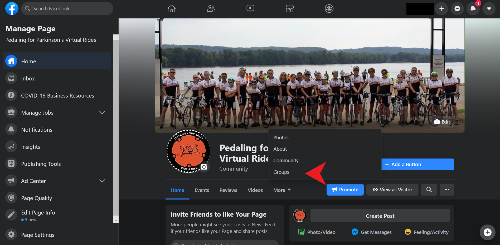
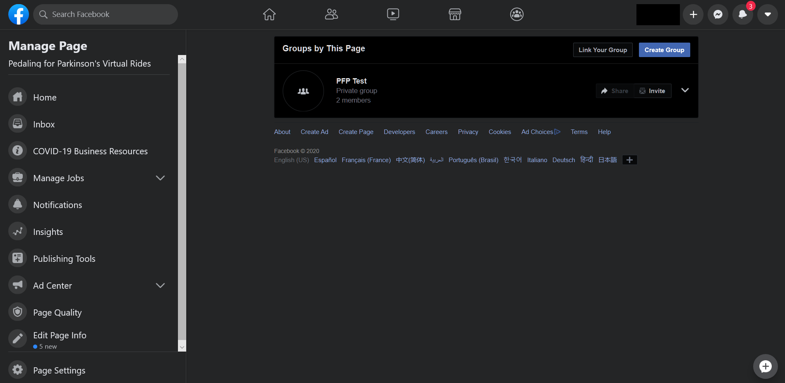

Joining a PFP group
Joining a Pedaling for Parkinson's Virtual Ride group is easy, but will require a facebook account. To set this up, simply go to facebook.com, and enter your information in the large 'sign up' part of the page. If you already have an account, simply log in at the top and follow the instructions below!
The image above is the main page for the Facebook page dedicated to these virtual rides, which can be found here. From this homepage, you can talk to others who do Pedaling for Parkinson's Vitrual Rides, connect with people from other groups, etc.
To join one of the groups, click on more, then groups. This will take you to the screen shown in the image below, where you will be able to join.
In the image above is the landing page for all of the groups linked to the Virtual Rides page. This will house Facebook Groups for all of the riding groups that are a part of This program. At the moment, only one "test" group is listed. Normally, this page will be more populated. To join the group, click on it from this page, and then click the "Join Group" icon. Groups will be private, so an administrator will have to let you in, but they should do this quickly. This is done simply to avoid bots.